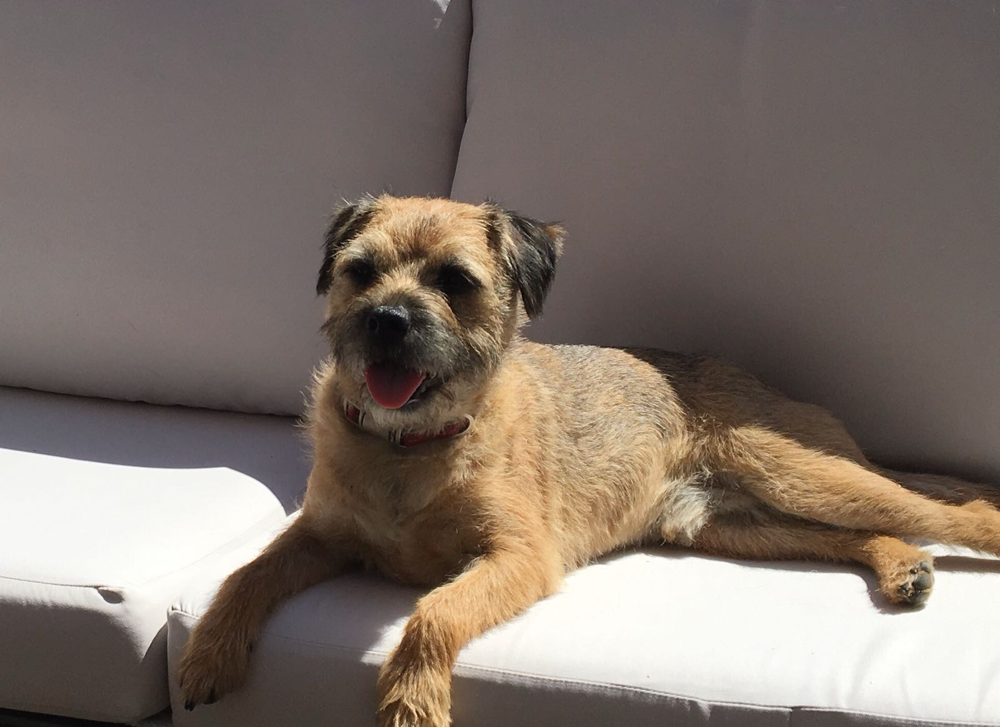

George Willoughby
Data journalist
Data journalist at The Times and Sunday Times. Birmingham City University and Cardiff University alum. Keen darts player and Lincoln City fan

Hi and thank you for visiting my website 👋
My name is George Willoughby and I am a data journalist. Aside from journalism, I am a lifelong supporter of Lincoln City FC âš½ï¸ and follow most American sports 🈠When I am not injured, I am a keen cricketer ğŸ and I have my moments on the oche 🯠Here are some more interesting things about me:
🇩🇪 Learning German
🥗 Vegetarian
🥪 Extensive meal deal knowledge
🾠Have a dog called Dexter (see right --->)
Work experience
| Company | Role | Date |
|---|---|---|
| The Times and Sunday Times | Data journalist | 2021-2023 |
| Eastern Eye | Freelance data journalist | 2020-2021 |
| Reach PLC | Data journalist | 2021 (one week) |
| HuffPost UK | Freelance data journalist | 2020-2021 |
| Gair Rhydd | Deputy editor | 2019-2020 |
| Reach PLC | Data journalist | 2019 (one week) |
| Gair Rhydd | Sport editor | 2018-2019 |
Education
| Institution | Level | Date |
|---|---|---|
| Birmingham City University | MA Data Journalism (Distinction) | 2020-2021 |
| Cardiff University | BA Journalism and Communications (2:1) | 2017-2020 |
| Poynton Sixth Form | A-levels (A/A/D) | 2015-2017 |